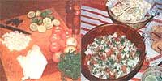

This fresh fish delicacy is delightful as an appetizer, entree, or snack.
I was introduced to ceviche (it's pronounced "say-vee-chay") while on a scuba diving expedition off the Caribbean coast of Mexico. We were out at sea on a Mexican fishing boat and-when a member of our party speared a large mackerel-the capitan hastened to prepare a lunch.
Using a very sharp knife, he skinned and filleted the fish, chopped it into chunks, placed the pieces in a bowl, and squeezed a number of little limes over them. Then he produced tomatoes, onions, "chiles" (actually hot jalapeño peppers), and a bunch of fresh cilantro (a popular Mexican herb, not unlike coriander or parsley). These, too, were chopped up and added to the fish . . . along with salt, pepper, and olive oil.
We took off our scuba gear and sat down to a memorable meal of ceviche and crackers.
The captain's recipe is standard all over Mexico and remains my favorite . . . just as mackerel is still my preferred fish for the dish. However, the possible variations on the basic formula are endless ... and every ceviche fan seems to have his or her own special version, each one as tasty as the next.
Actually, any white fish-either fresh or saltwater-can be used. Traditionally, Mexicans prefer "fatty" seafood, such as mackerel and pompano. Some cooks, though, like the more delicate sole, while others go for striped bass or red snapper. But-no matter what kind of finny creature you choose-ceviche is always at its best when the fish is freshly caught.
Once your main ingredient is in hand ... skin the fish, fillet it, and cut it into chunks. (Though some cooks use large pieces, I prefer small cubes of half an inch or less.) Like the capitan, I happen to especially favor the tanginess of lime juice as a marinade, but you may also try lemon juice .. . half lime and half lemon ... or a mixture of lime, lemon, and orange. But here again, use only freshly squeezed juice, as the bottled kind is simply inadequate for the job.
Ceviche recipes vary as to the suggested marinating time-they run the gamut from 30 minutes to 12 hours-but I find half an hour to be plenty for any kind of fresh fish. That's because the fruit juice's citric acid "cooks" the fish (by the dish's looks and taste, you'd never know the meat was raw) and long marination softens it too much . . . I enjoy fish with a firmer texture.
After the dish has marinated, you may either keep or drain off the liquid, depending on whether you prefer "wet" or "dry" ceviche.
THE BASIC RECIPE
Here's how to make the type of ceviche that's most often served in Mexican restaurants . . . usually as an appetizer:
Cut 1 pound of white-fleshed fish into half-inch cubes and squeeze the juice of six limes over them. Set the dish aside, and-while it marinates-chop 1 Bermuda onion, 3 tomatoes, and 2 jalapeno peppers (they're hot!) very fine. Add theseplus 1/4 cup of olive or salad oil, 4 tablespoons of fresh cilantro or parsley, and salt and pepper to taste-to the fish, and let it stand for 10 minutes.
SPICY CEVICHE
For a tangy and piquant appetizer to be served with crackers (it's ideal for a margarita party!), prepare your fish as usual and marinate it in lime juice. Meanwhile, make this mixture:
Place 3 tomatoes, 2 Bermuda onions, 1 green pepper, and 2 jalapeno peppers-all chopped very fine-into a bowl. Add 1/2 cup of halved green olives . . . 1/4 cup of olive oil . . . 1/2 teaspoon each of oregano, basil, and thyme . . . 1 bay leaf . . . 4 tablespoons of fresh chopped parsley or cilantro ... 1/2 teaspoon of Tabasco ... 1 squeezed clove of garlic ... 1/4 cup of tomato ketchup . . . and salt and pepper.
When that's done, drain the fish and add the spicy mixture, letting the treat stand for at least 10 minutes before you serve it.
CARROT CEVICHE
This recipe produces a truly unique main dish or salad. Cut 1 pound of fish into fillets and marinate them for 1/2 hour in the juice of 6 limes. Then drain the slices of fish, pat them dry with paper towels, chop them very fine, and drain them on paper towels again.
At that point, place the fish in a bowl and add 1 large Bermuda onion and 1 jalapeno pepper-both chopped very fineplus 2 large, finely grated carrots. Next, mix in 1/2 teaspoon of oregano, 2 tablespoons of olive oil, and 2 tablespoons of parsley.
COCONUT CEVICHE
Finally, for a touch of the exotic, cut 1 pound of fish into half-inch cubes and marinate them in the juice of 6 limes (or 3 limes and 3 oranges). After 1/2 hour, drain off the liquid and add the milk and finely grated meat of one small coconut, 1 clove of crushed garlic, salt, and white pepper. Serve the dish in a coconut shell garnished with orange slices and flowers.
I'm sure you'll find ceviche-whether served as a snack with crackers, a seafood cocktail, a salad, a luncheon entree, or part of a buffet-quick and easy to make, inexpensive, always popular . . . and especially appetizing during the coming hot summer days!
|
 |
|
|